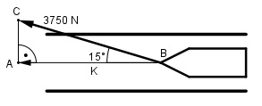

Aufgabe 112 Ein Schiff wird vom Ufer aus mit einer Kraft von 3750 N unter einemWinkel von 15° gezogen. Wie groß ist die Kraft K, die das Schiff vorwärts bewegt?

Im Dreieck ABC: K cos 15° = ---------- |*3750 N 3750 N K = cos 15° * 3750 N = 0,9659 * 3750 N = 3622,1 N